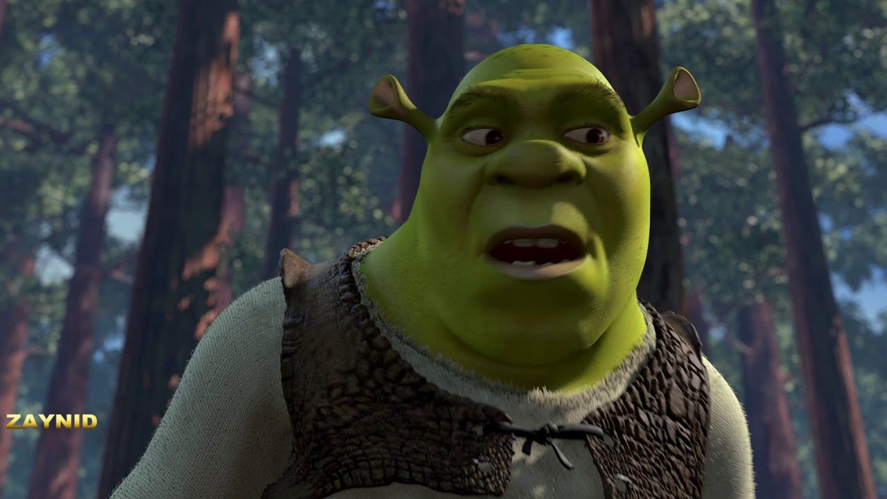
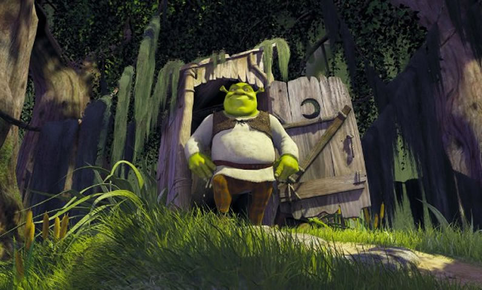
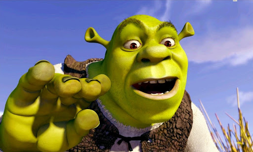
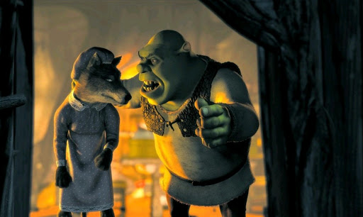
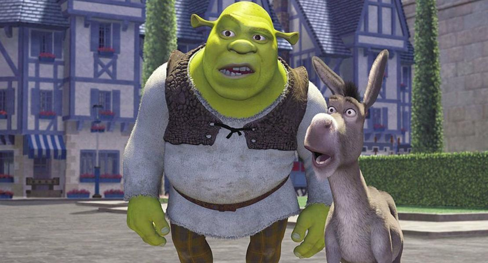
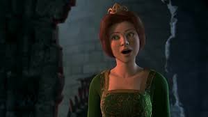

- Шрек
- Рік: 18 травня 2001 року
- Країна: США
- Жанр: комедія, фентезі, пригоди
- Режисер: Ендрю Адамсон, Вікі Дженсон
- Актори: Майк Майерс, Едді Мерфі, Камерон Діас
- Тривалість: 92 хвилини
- Вікові обмеження: 6+
ФОТО






ОПИС
Сюжет гумористично обігрує мотиви багатьох європейських казок, оповідаючи про огра Шрека, який, щоб позбутися депортованих на його землю місцевим лордом чарівних істот, погоджується виконати його завдання. Шреку разом з балакучим Віслюком доводиться визволити з полону дракона принцесу Фіону, разом з тим розкриваючи, що багато казкових персонажів зовсім не такі, як про них розповідають.